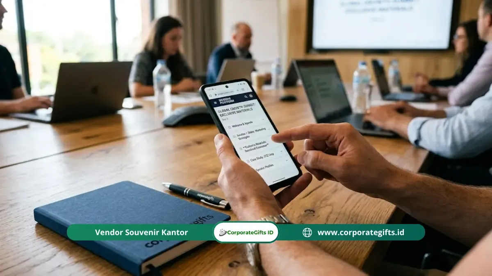

Corporate Gifts ID - QR code materi digital seminar adalah kode pemindaian respons cepat yang ditempatkan secara strategis pada goodie bag, cover modul, atau ID card seminar untuk memberi peserta terdaftar akses langsung ke aneka konten eksklusif. Konten ini meliputi rekaman video sesi, berkas presentasi pembicara, materi lembar kerja tambahan, hingga modul e-learning lanjutan, cukup dengan memindai kode menggunakan kamera smartphone tanpa hambatan mengetik alamat URL yang panjang.
Poin Kunci Materi Digital Seminar & QR Code:
- Akses Konten Eksklusif: QR code menghubungkan peserta langsung ke rekaman sesi, dokumen presentasi beresolusi tinggi, dan modul e-learning resmi.
- Sinergi Cetak & Digital: Pendekatan hybrid antara souvenir cetak berkualitas dan portal online memberi nilai tambah berkelanjutan jauh setelah event selesai.
- Uji Teknis Berlapis: Wajib melakukan uji pemindaian minimal 3 hari sebelum acara pada perangkat Android maupun iOS untuk mencegah tautan eror.
- Eksklusivitas Terjaga: Dilengkapi proteksi halaman tujuan berupa kode akses atau otentikasi email agar konten materi tidak bocor ke publik non-peserta.
- Efisiensi Budget & ESG: Mengurangi tumpukan cetakan kertas tebal yang rawan tercecer sekaligus mendukung komitmen pelestarian lingkungan korporat.
Apa Fungsi QR Code dalam Goodie Bag Seminar?
QR code materi digital seminar berfungsi sebagai pintu gerbang interaktif yang menghubungkan souvenir fisik dalam goodie bag seminar korporat dengan aset digital perusahaan. Selama bertahun-tahun, panitia seminar dibebani oleh biaya percetakan buku materi tebal ratusan halaman yang mahal dan sering kali ditinggalkan begitu saja di meja acara oleh para peserta.
Dengan menyematkan kode QR pada item seminar kit seperti totebag kain, agenda, lanyard, atau kartu sisipan khusus, seluruh materi berbobot berat kini beralih ke dalam genggaman ponsel pintar. Berdasarkan data industri event global dari Statista (2023), tingkat pemindaian QR code untuk interaksi event profesional melonjak lebih dari 26 persen setiap tahunnya, mencerminkan pergeseran preferensi audiens modern terhadap dokumen digital yang praktis, mudah disimpan di Google Drive, dan dapat dicari secara cepat menggunakan fitur pencarian teks.
Konten Digital Apa yang Bisa Diakses Melalui QR Code Seminar?
Kekuatan utama QR code terletak pada fleksibilitas jenis konten yang bisa ditautkan. Penyelenggara tidak lagi dibatasi oleh jumlah halaman cetak. Berikut adalah 5 kategori materi digital bernilai tinggi yang paling diapresiasi oleh peserta seminar korporat:
Rekaman Video Sesi Pembicara
Peserta eksekutif yang memiliki jadwal padat atau sempat terlewat sesi penting dapat menonton ulang presentasi berkualitas tinggi kapan pun mereka inginkan pasca-acara.
Slide Dokumen & Handout Lengkap
Slide presentasi narasumber dalam format PDF resolusi tinggi lengkap dengan grafik, data riset, dan catatan narasumber yang tidak ditampilkan di layar utama.
Modul E-Learning & Studi Kasus
Tautan langsung ke modul pelatihan online, bahan bacaan pengayaan, dan template dokumen kerja yang siap diaplikasikan langsung di kantor peserta.
E-Sertifikat & Form Evaluasi Kilat
Peserta dapat langsung mengisi kuesioner umpan balik secara instan serta mengunduh sertifikat kehadiran digital berotentikasi resmi tanpa antre.

Kartu sisipan berbahan kertas tebal ramah lingkungan dengan cetakan QR code dinamis memberi akses cepat ke portal materi seminar resmi.
Bagaimana Cara Menerapkan QR Code dalam Goodie Bag Seminar?
Penerapan teknologi QR code pada paket seminar kit perusahaan memerlukan alur kerja teknis yang rapi dan teruji agar tidak menimbulkan keluhan di hari H pelaksanaan event. Terapkan 5 langkah taktis berikut:
Langkah 1: Siapkan Landing Page Terpusat Terlebih Dahulu
Hindari mengarahkan QR code langsung ke folder cloud terbuka seperti Google Drive mentah yang kurang profesional. Buatlah halaman landing page sederhana bermerek perusahaan penyelenggara (misalnya event.perusahaan.com/materi-2026). Halaman ini berfungsi sebagai portal utama yang memuat sambutan, daftar modul, profil narasumber, dan tombol unduhan masing-masing materi sesi.
Langkah 2: Gunakan QR Code Dinamis, Bukan Statis
Ini adalah aturan terpenting dalam pengadaan merchandise seminar. QR code dinamis memungkinkan panitia mengubah alamat URL tujuan kapan saja di dashboard, bahkan setelah ribuan paket seminar kit selesai dicetak. Jika terjadi pergantian server file atau revisi slide pembicara pada menit-menit terakhir, kode fisik yang dipegang peserta tetap dapat berfungsi secara normal. Selain itu, QR code dinamis menyediakan analitik jumlah pemindaian secara realtime.
Langkah 3: Uji QR Code di Berbagai Sistem Operasi
Lakukan simulasi pengetesan pemindaian minimal 3 hari sebelum acara dimulai. Ujilah menggunakan setidaknya 4 varian smartphone berbeda (iPhone model terbaru, iPhone lawas, Android Google Pixel/Samsung, serta ponsel Android kelas menengah). Pastikan kamera default smartphone dapat mendeteksi kode secara instan di bawah berbagai kondisi pencahayaan ruangan seminar tanpa memerlukan instalasi aplikasi scanner pihak ketiga.
Langkah 4: Terapkan Pembatasan Akses Bila Diperlukan
Jika materi presentasi memuat data rahasia industri, hak paten, atau riset berbayar, tambahkan lapisan keamanan otentikasi. Anda dapat menerapkan perlindungan kata sandi sederhana (password yang dibagikan oleh MC di akhir acara) atau mewajibkan peserta memasukkan alamat email yang sudah terdaftar pada sistem ticketing seminar.
Langkah 5: Cantumkan Instruksi Singkat & Alternatif Short URL
Selalu sediakan jaring pengaman (fallback option). Di bawah visual cetak QR code, cetaklah teks panduan ringkas berukuran proporsional, misalnya: "Arahkan kamera smartphone Anda untuk membuka materi digital", lengkap dengan tautan URL pendek cadangan seperti bit.ly/materi-seminar2026. Hal ini memastikan peserta yang kamera ponselnya mengalami kendala teknis tetap bisa mengakses materi tanpa rasa frustrasi.
Perbandingan Distribusi Materi Seminar: Cetak vs QR Code
Untuk memberikan gambaran menyeluruh bagi panitia pengadaan corporate event dan tim HRD, berikut perbandingan mendalam antara format materi seminar konvensional dan sistem distribusi materi berbasis QR code digital:
| Parameter Evaluasi | Buku Modul Cetak Konvensional | Flashdisk USB Souvenir | QR Code Materi Digital Cloud |
|---|---|---|---|
| Biaya Produksi | Sangat tinggi (kertas, jilid, cetak warna) | Sedang hingga tinggi per unit chip | Sangat hemat & efisien anggaran |
| Fleksibilitas Revisi | Tidak bisa direvisi setelah dicetak | Sulit direvisi bila data sudah di-copy | Bisa diperbarui realtime kapan saja |
| Kapasitas Konten | Sangat terbatas pada jumlah lembar | Terbatas 8 GB - 32 GB | Tanpa batas (video, audio, berkas cloud) |
| Dampak Lingkungan (ESG) | Konsumsi kertas tinggi, jejak karbon besar | Limbah elektronik bila rusak | Eco-friendly, mendukung zero paper event |
| Data Analitik Keterlibatan | Nol analitik (tidak terlacak) | Nol analitik | Lengkap (jumlah klik, device, durasi baca) |
Tips Memaksimalkan Nilai QR Code dalam Seminar Korporat
Agar investasi seminar kit digital Anda menghasilkan impresi yang optimal dan berdampak jangka panjang, perhatikan beberapa kiat praktis berikut:
- Perbarui Konten Pasca-Acara: Jangan biarkan landing page mati setelah hari H. Tambahkan galeri foto dokumentasi resmi seminar, rekaman highlight video 2 menit, serta resume poin utama narasumber maksimal H+3 acara.
- Integrasikan dengan Souvenir Fungsional: Selain pada kartu sisipan, cetak QR code berukuran rapi menggunakan teknik grafir laser pada tumbler stainless steel atau notebook kulit eksklusif dari katalog souvenir kami. Hal ini membuat akses materi terus melekat pada meja kerja peserta selama bertahun-tahun.
- Perhatikan Kontras dan Ukuran Fisik Cetak: Jangan mencetak QR code berukuran kurang dari 2,5 cm x 2,5 cm. Pastikan kontras warna latar belakang dan warna pola kode cukup tinggi (hindari mencetak QR code warna abu-abu tipis di atas kertas cokelat kraft).
- Gunakan Domain Resmi Perusahaan: Tautan yang menggunakan subdomain brand korporat Anda jauh lebih dipercaya oleh peserta korporat dibandingkan domain pemendek tautan acak yang terkesan mencurigakan.
Pertanyaan Seputar QR Code Materi Digital Seminar (FAQ)
Kesimpulan & Rekomendasi Solusi
Penggunaan QR code untuk materi digital seminar adalah solusi modern yang menyatukan kepraktisan teknologi tanpa meninggalkan nilai prestisius souvenir fisik. Dengan pendekatan hybrid ini, panitia dapat menghemat anggaran percetakan secara signifikan, mengurangi sampah kertas, dan memberikan pengalaman edukatif interaktif yang bertahan lama di tangan peserta.
Pastikan Anda merancang alur materi digital dengan landing page yang responsif, memilih QR code tipe dinamis yang fleksibel, dan memadukannya dengan paket seminar kit berkualitas prima dari vendor yang berpengalaman melayani instansi dan korporasi terkemuka di Indonesia.

Ditulis oleh: Arinda Zakia
Senior Corporate Gifting SpecialistSpesialis strategi souvenir promosi korporat, kurasi paket seminar kit terpadu, dan hampers eksekutif B2B dengan pengalaman lebih dari 7 tahun mendampingi ratusan instansi pemerintah dan perusahaan multinasional di Indonesia.
Lihat Profil Lengkap & Panduan Lainnya